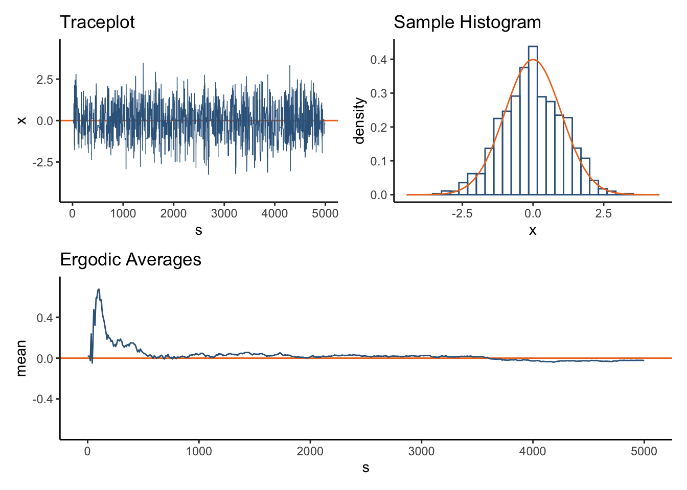
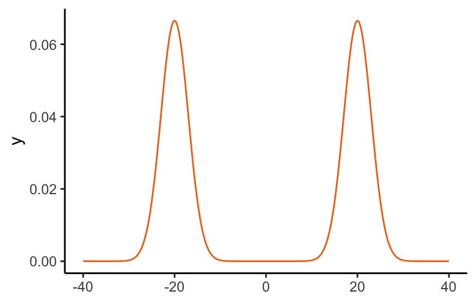

1 The Goal
A common statistical goal is to estimate an expected value of a function \(h\) of a random variable \(X \in \mathcal{X}\subset\mathbb{R}^d\):
\[\mathbb{E}_X[h(X)] = \int\limits_{\mathcal{X}} h(x) d\pi_X.\]
Despite the aparent simple expression above, these integrals are generally intractable so that one cannot compute them analytically. Furthermore, the dimension \(d\) is sufficiently high, as to also render numerical integration infeasable.
Instead, one would like to resort to a Law of Large numbers via Monte Carlo methods. That is, if one is able to simulate in a computer \(\lbrace X_s\rbrace_{s=1}^S \overset{iid}{\sim} \pi_X\), then a reasonable estimator of the target expectation is the sample average since the latter converges to the former as the sample size \(S\) grows:
\[\hat{h}_S := \dfrac{1}{S}\sum\limits_{s=1}^S h(X_s) \underset{S\to\infty}{\longrightarrow} \mathbb{E}_X[h(X)].\]
This is promising, but one rapidly realizes that for a given \(\pi\) of interest it may also be hard to obtain independent samples from it.
Fortunately, it may be easier to generate dependent samples and still use the sample average as an estimator. The idea is that one can construct a Markov Chain whose limiting invariant distribution is \(\pi\) and for which an Ergodic Theorem applies to justify our estimation procedure. Indeed, a Markov Chain Monte Carlo estimator, or MCMC estimator for short, is constructed by simulating a realization of a Markov Chain \(\lbrace X_s\rbrace_{s=1}^S\) such that the following is true:
\[\begin{split} &X_s \overset{\mathcal{D}}{\underset{s\to\infty}{\longrightarrow}} \pi_X \\ &X_s \sim \pi \Longrightarrow X_{s+1} \sim \pi_X \\ &\hat{h}_S \underset{S\to\infty}{\longrightarrow} \mathbb{E}_X[h(X)] \end{split}\]
As an illustration, let us estimate the mean of a univariate standard normal via one of the basic MCMC algorithms: Random Walk Metropolis. The traceplot in the top-left panel of Figure 1.1 shows the evolution of the chain where the horizontal axis represents the sample number and the vertical axis the \(x\) state of the chain; we see an oscilating ‘caterpillar’ pattern around the bulk of the distribution and centered at the true mean value of \(0\), signaled by the orange horizontal reference line. On the top-right panel we see the chain’s histogram approximation (blue) to the true density (orange); while not perfect, we can see a decent match. Most importantly to our estimation purposes, we see on the bottom panel the evolution of the ergodic averages or cummulative means; indeed there is convergence to the true mean as the chain evolves.

This method also works for higher dimensions. If we now take a \(20\)-dimensional multivariate normal with independent components, we see the same pattern of convergence of the ergodic averages to each of the marginal means (top of Figure 1.2). Thinking of a more general expectation of interest, we could for example consider the probability of the first component being bigger than the second component:
\[\text{Pr}[X_1 \geq X_2] = \mathbb{E}_X\left[\,1_{[0,\infty)}(X_1 - X_2)\,\right] = 0.5,\]
the convergence is shown in the bottom of Figure 1.2.
Of course, more complicated distributions lead to more difficult expectations and have lead to a big and exciting area of research aiming to devise better and more efficient MCMC algorithms beyond Random Walk Metropolis. For example, Gibbs Sampling, Elliptic Slice Sampling or Hamiltonian Monte Carlo are all versions of the general Metropolis-Hastings algorithm.1 Another generalization to problems where there is change in dimensionality, like model selection, is Reversible Jump MCMC.
While these methods have been highly successful, a situation where they fail badly is whenever the distribution been targeted exhibits multimodality. For example, consider the following mixture of normals in Figure 1.3.

The localized and mode-pulling behavior of most common MCMC algorithms prevent them to traverse, in any finite amount of time, the big valley of low probability that separates the modes, effectively trapping any given chain in one of them.
If the distributions were flatter, and there would be more bridging mass between the modes, then the same algorithm would be much better behaved and if tuned properly would have no major issues in this simple setting. For example, just letting the chains run longer for the alternative model with parameter \(\beta=0.05\), yields the following:
Gains could be made with more careful tunning. However, what this example illustrates is that flatter densities are easier to explore for MCMC methods and help them escape local mode traps. This property leads to the Simulated Tempering algorithm.
It is well documented that the growth of MCMC statistical methodology started with Gibbs Sampling and the availability of software like BUGS, which has continued and expanded to tools like JAGS, Stan, PyMC, BlackJAX or Turing↩︎